InAmigos Foundation is working to create a better society through education, environment, women empowerment, animal welfare and youth development.
InAmigos Foundation is a non-profit organization dedicated to improving lives through social initiatives. Our mission is to bring positive change by supporting education, helping people in need, protecting animals, empowering women, preserving nature, and providing opportunities for youth. InAmigos Foundation was founded on September 23, 2020, by Mr. Govind Shukla (Founder & CEO). It is a Section 8 registered non-profit organization, licensed by the Central Government. It has its base at Chhattisgarh. It holds 80G & 12A certifications, ensuring transparency, accountability and tax-exempt benefits for donors. Our foundation is also CSR-1 registered, allowing us to collaborate with corporate partners for impactful Corporate Social Responsibility (CSR) initiatives. Additionally, we are NITI Aayog registered, aligning our work with national development goals and hold the prestigious IAF ISO 9001:2015 certification, signifying our commitment to maintaining high-quality standards in operations and service delivery. Our Key Initiatives 1. Project Seva – Providing food and clothing to the underprivileged. 2. Project Bachpanshala – Ensuring quality education for underprivileged children. 3. Project Jeev – Animal welfare, including rescue, protection and feeding. 4. Project Udaan – Women empowerment through skill development and financial independence. 5. Project Prakriti – Environmental conservation and sustainability efforts. 6. Project Vikas – Enhancing employability through skill development programs. With a strong network of dedicated professionals, volunteers and corporate partners, we work tirelessly to bring positive change in society. Our social media platforms actively showcase our impact, keeping our supporters informed and engaged. At InAmigos Foundation, we believe in the power of collective action. Every contribution is directed towards essential causes such as food distribution, education, women empowerment, animal welfare, environmental sustainability and social inclusion programs across India. Join Us in Making a Difference Together, we can create a more inclusive, compassionate and empowered society.
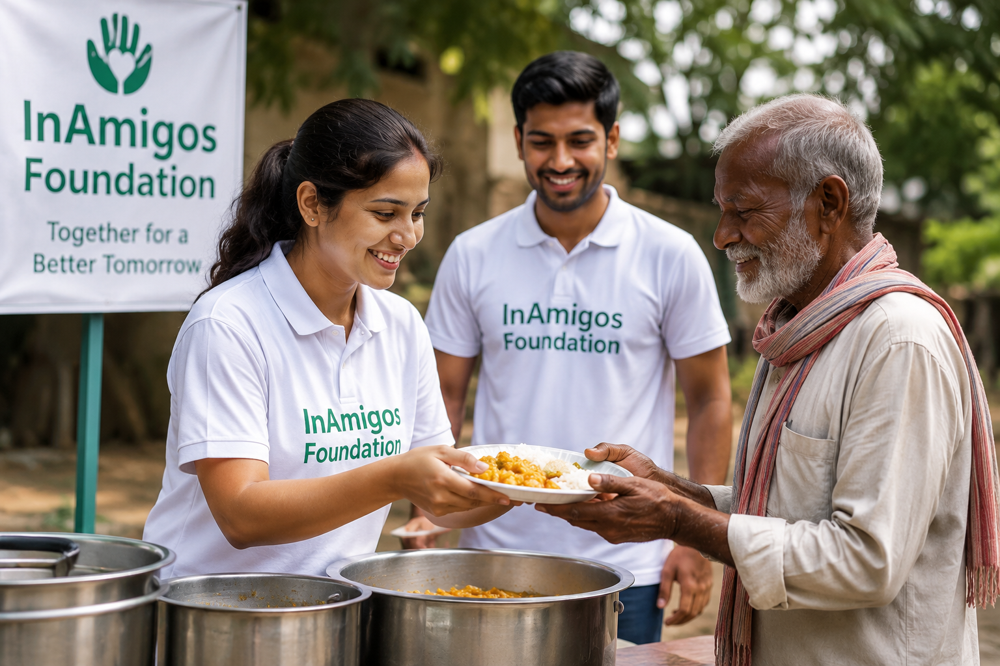
Helping people by providing food, clothes and essential items.
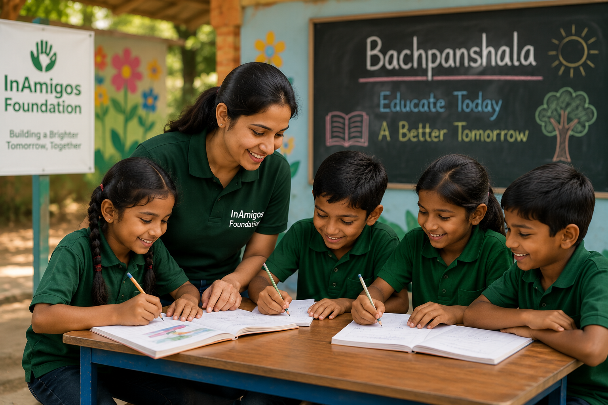
Supporting education and care for underprivileged children.
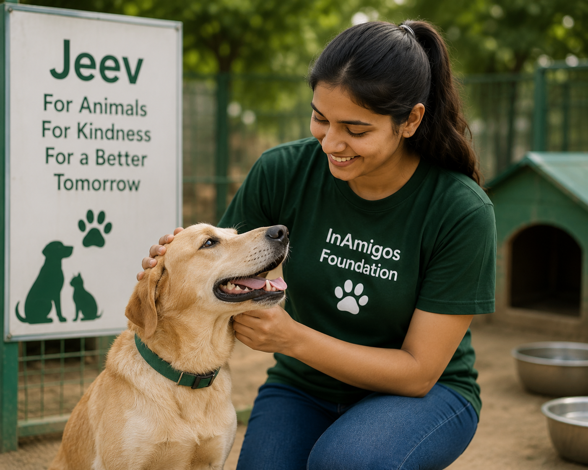
Protecting and rescuing animals while spreading awareness.
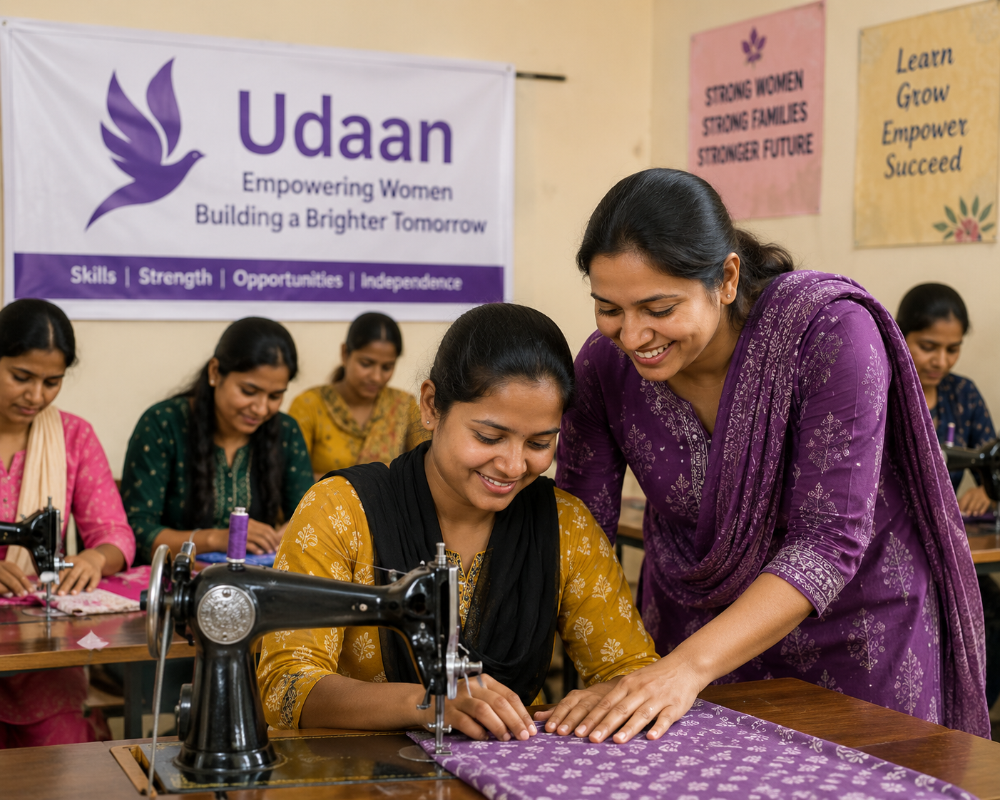
Empowering women through skill development and opportunities.
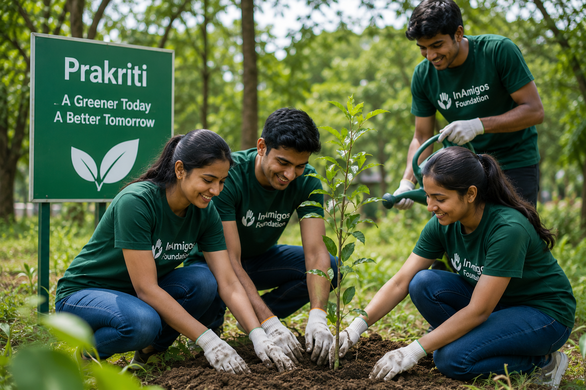
Protecting nature through plantation and clean-up drives.
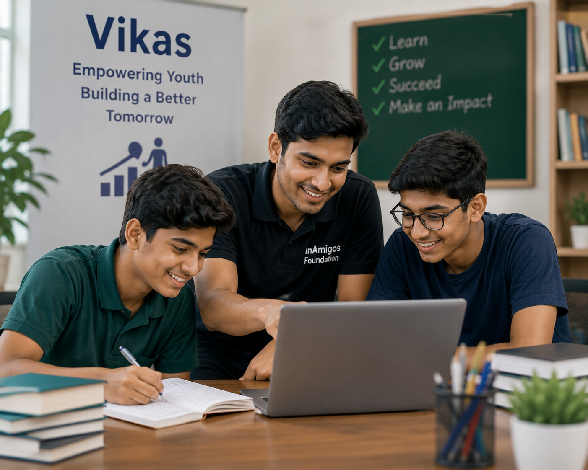
Helping youth grow through internships and skill-building.
Helping children access quality education and a brighter future.
Providing food, clothes and basic necessities to families in need.
Encouraging women through skill development and opportunities.
Protecting and caring for stray and rescued animals.
Creating a greener future through plantation and clean-up drives.
Supporting students with internships, learning and career guidance.
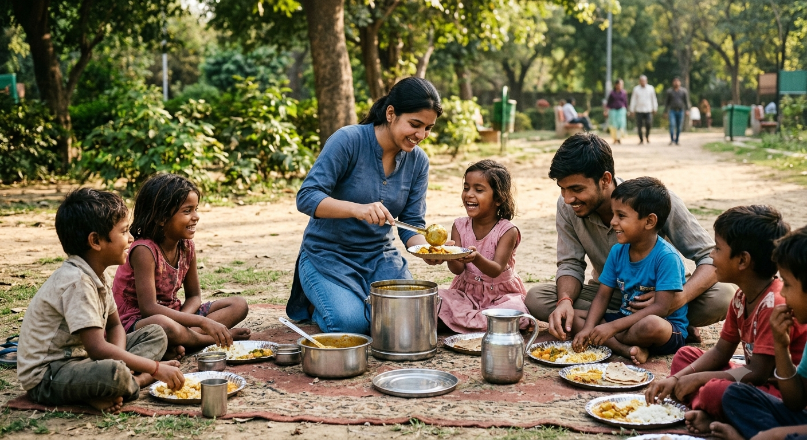
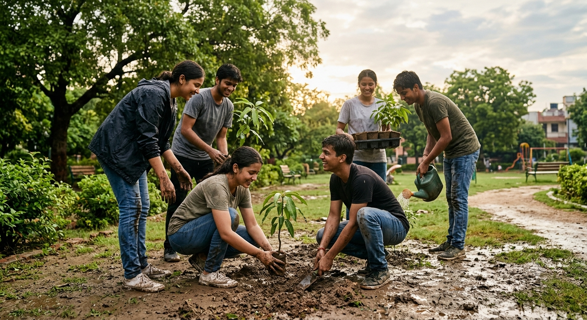
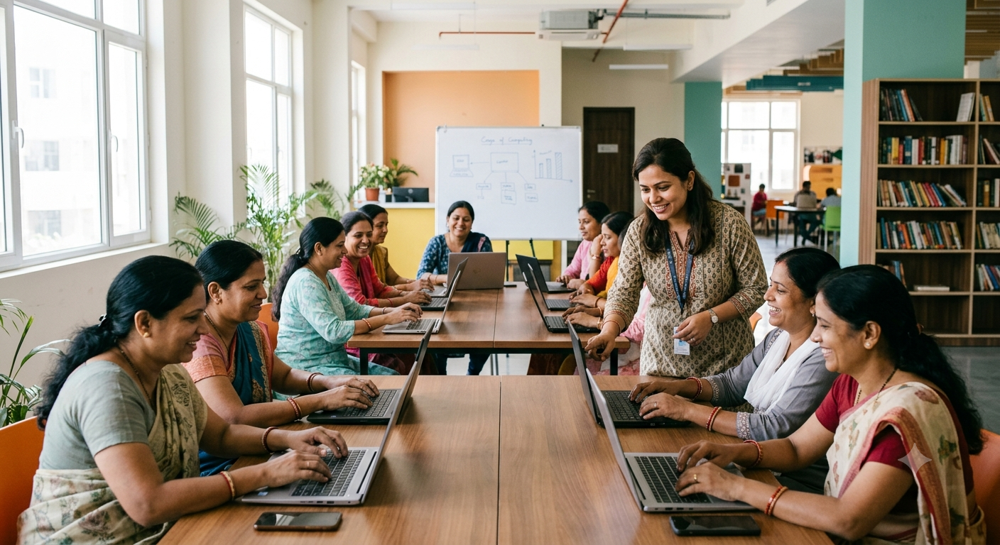
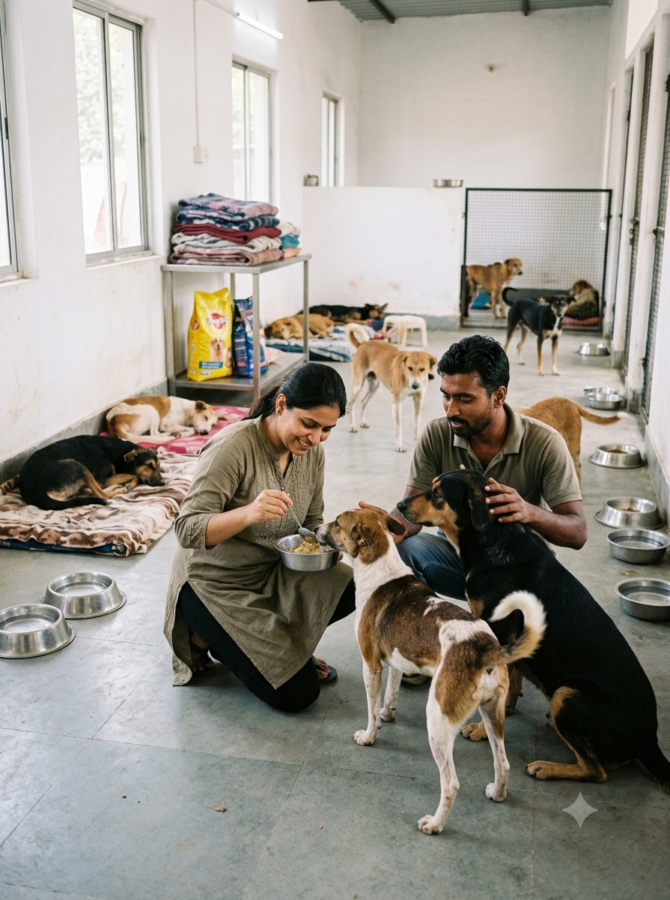
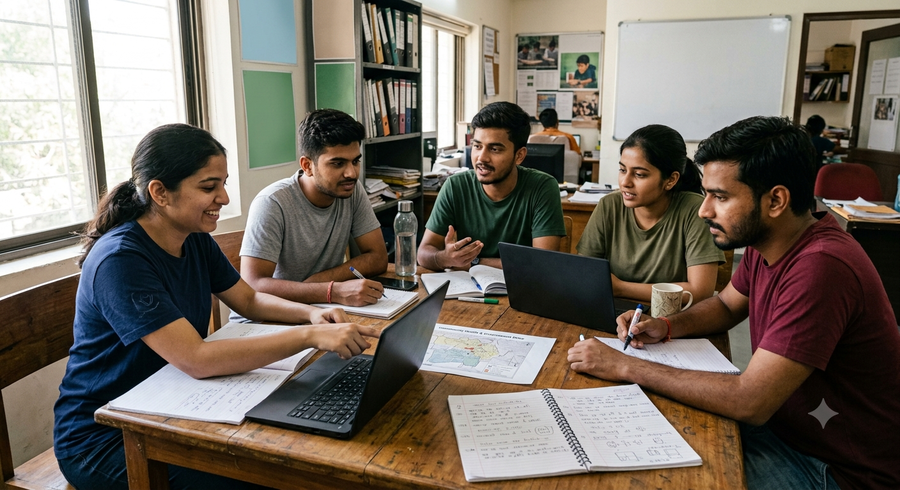
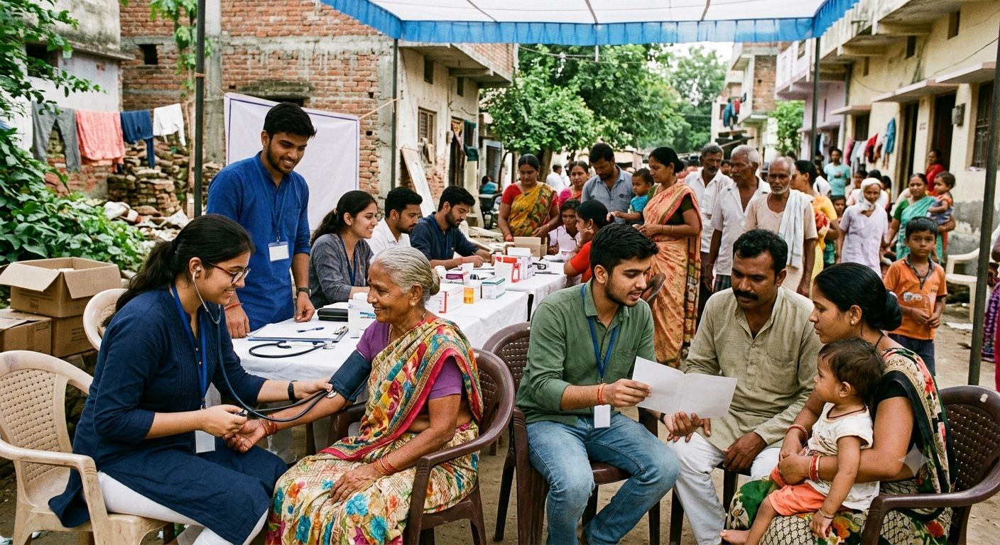
Together we can make a positive impact in society. Join us today and help create a better future.
Email: support@inamigosfoundation.org.in
Address: Ward No. 5, Gram Post, Sipat Ujwal Nagar, Bilaspur. Chhattisgarh Pin-Code: 495555
Phone: +91 626 730 9902
Follow us on our social media platforms.